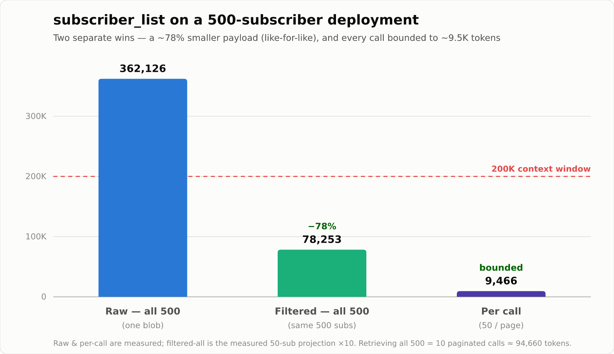

Cutting AI Token Cost on free5GC Operations: A Token-Optimization Middle Layer for free5GC-MCP
Note
Author: Ng Warren
Date: 2026/07/15
Quick Recap: free5GC-MCP
This is a follow-up in the free5GC-MCP series. My last post, MCP Server Integration with free5GC: Architecture and Use Cases, introduced the server that lets an AI assistant drive free5GC through typed, controlled tools instead of raw shell access. This post is about what happens on the backend — the middle layer that keeps verbose 5G-core responses from drowning the model's context window, and the measured before/after numbers that justify it.
1. Why a Token-Optimization Middle Layer?
In that first post we gave an AI assistant a set of MCP tools — subscriber_list, subscriber_get, local_free5gc_status, the Kubernetes/Helm controls, and so on — and it worked: the model could translate "show me all the subscribers on PLMN 20893 and tell me which ones are on the low-latency slice" into a real webconsole query.
But there is a cost nobody sees until the deployment grows. free5GC's webconsole is built for a browser, not for a language model. A single subscriber object is ~2.9 KB of deeply nested JSON — cryptographic keys, sequence numbers, SM-policy plumbing, SMF-selection tables, flow rules — most of which an AI never reasons about. Multiply that by a few hundred subscribers and one subscriber_list call returns more tokens than the model's entire context window can hold. The tool call succeeds. The conversation dies — truncated, or billed at a price that makes routine operations absurd.
So the design goal of this iteration was blunt:
Every verbose tool response must be compressed before it reaches the AI, without losing the information the AI actually needs to make an operational decision.
That compression stage — the token-optimization middle layer — is the whole subject of this post.
2. The Problem, in Numbers
Here is the raw shape of one free5GC subscriber, straight from the webconsole.
This is what the model used to receive, per subscriber, on every list call:
Show the full raw subscriber context
{
"AccessAndMobilitySubscriptionData": {
"gpsis": ["msisdn-"],
"nssai": {
"defaultSingleNssais": [{ "sd": "010203", "sst": 1 }],
"singleNssais": [{ "sd": "112233", "sst": 1 }]
},
"subscribedUeAmbr": { "downlink": "2 Gbps", "uplink": "1 Gbps" }
},
"AmPolicyData": { "subscCats": ["free5gc"] },
"AuthenticationSubscription": {
"authenticationManagementField": "8000",
"authenticationMethod": "5G_AKA",
"milenage": { "op": { "encryptionAlgorithm": 0, "encryptionKey": 0, "opValue": "" } },
"opc": { "encryptionAlgorithm": 0, "encryptionKey": 0, "opcValue": "8e27b6af0e692e750f32667a3b14605d" },
"permanentKey": { "encryptionAlgorithm": 0, "encryptionKey": 0, "permanentKeyValue": "8baf473f2f8fd09487cccbd7097c6862" },
"sequenceNumber": "000000000000"
},
"ChargingDatas": [
{ "chargingMethod": "Offline", "dnn": "", "filter": "", "quota": "0", "snssai": "01010203", "unitCost": "1" },
{ "chargingMethod": "Offline", "dnn": "internet", "filter": "1.1.1.1/32", "qosRef": 1, "quota": "0", "snssai": "01010203", "unitCost": "1" },
{ "chargingMethod": "Online", "dnn": "", "filter": "", "quota": "100000", "snssai": "01112233", "unitCost": "1" },
{ "chargingMethod": "Online", "dnn": "internet", "filter": "1.1.1.1/32", "qosRef": 2, "quota": "5000", "snssai": "01112233", "unitCost": "1" }
],
"FlowRules": [
{ "dnn": "internet", "filter": "1.1.1.1/32", "precedence": 128, "qosRef": 1, "snssai": "01010203" },
{ "dnn": "internet", "filter": "1.1.1.1/32", "precedence": 127, "qosRef": 2, "snssai": "01112233" }
],
"QosFlows": [
{ "5qi": 8, "dnn": "internet", "gbrDL": "108 Mbps", "gbrUL": "108 Mbps", "mbrDL": "208 Mbps", "mbrUL": "208 Mbps", "qosRef": 1, "snssai": "01010203" },
{ "5qi": 7, "dnn": "internet", "gbrDL": "207 Mbps", "gbrUL": "207 Mbps", "mbrDL": "407 Mbps", "mbrUL": "407 Mbps", "qosRef": 2, "snssai": "01112233" }
],
"SessionManagementSubscriptionData": [
{
"dnnConfigurations": {
"internet": {
"5gQosProfile": { "5qi": 9, "arp": { "preemptCap": "", "preemptVuln": "", "priorityLevel": 8 }, "priorityLevel": 8 },
"pduSessionTypes": { "allowedSessionTypes": ["IPV4"], "defaultSessionType": "IPV4" },
"sessionAmbr": { "downlink": "1000 Mbps", "uplink": "1000 Mbps" },
"sscModes": { "allowedSscModes": ["SSC_MODE_2", "SSC_MODE_3"], "defaultSscMode": "SSC_MODE_1" }
}
},
"singleNssai": { "sd": "010203", "sst": 1 }
},
{
"dnnConfigurations": {
"internet": {
"5gQosProfile": { "5qi": 8, "arp": { "preemptCap": "", "preemptVuln": "", "priorityLevel": 8 }, "priorityLevel": 8 },
"pduSessionTypes": { "allowedSessionTypes": ["IPV4"], "defaultSessionType": "IPV4" },
"sessionAmbr": { "downlink": "1000 Mbps", "uplink": "1000 Mbps" },
"sscModes": { "allowedSscModes": ["SSC_MODE_2", "SSC_MODE_3"], "defaultSscMode": "SSC_MODE_1" }
}
},
"singleNssai": { "sd": "112233", "sst": 1 }
}
],
"SmPolicyData": {
"smPolicySnssaiData": {
"01010203": { "smPolicyDnnData": { "internet": { "dnn": "internet" } }, "snssai": { "sd": "010203", "sst": 1 } },
"01112233": { "smPolicyDnnData": { "internet": { "dnn": "internet" } }, "snssai": { "sd": "112233", "sst": 1 } }
}
},
"SmfSelectionSubscriptionData": {
"subscribedSnssaiInfos": {
"01010203": { "dnnInfos": [{ "dnn": "internet" }] },
"01112233": { "dnnInfos": [{ "dnn": "internet" }] }
}
},
"plmnID": "20893",
"ueId": "imsi-208930000000001"
}
Scale that up and the numbers get hostile fast:
| Deployment size | Raw subscriber_list payload |
Approx. tokens (bytes/4) |
|---|---|---|
| 50 subscribers | 144,851 bytes (≈ 141 KB) | ≈ 36,213 |
| 500 subscribers | 1,448,501 bytes (≈ 1.4 MB) | ≈ 362,126 |
A 500-subscriber list is ~362K tokens. It does not fit in a 200K-token context window — the single most common operational query is physically impossible to answer without help. That is the problem the middle layer exists to solve.
3. System Architecture
The MCP server sits between the AI and free5GC, and every tool response passes through the optimization layer on the way out. There are two complementary compression paths — one for structured 5G-domain data, one for generic host inspection.
flowchart TD
AI["🤖 AI Assistant<br/>(Copilot / Claude / Codex)"]
subgraph MCP["free5GC MCP Server · pkg/mcp/server.go"]
direction TB
DISP["handleCallTool<br/>(dispatch by tool name)"]
subgraph LAYER["Token-Optimization Middle Layer"]
direction TB
NATIVE["<b>Path A — Native filter</b><br/>pkg/tokenfilter<br/>StripAuthSecrets → Summarize (Rich)<br/>→ FilterByPlmn → Paginate"]
RTK["<b>Path B — rtk proxy</b><br/>rtk_exec (allowlisted)<br/>ls · git · grep · find · cat"]
end
end
CLIENT["control.Free5GCClient<br/>(webconsole REST)"]
F5GC["free5GC webconsole<br/>+ Network Functions"]
HOST["MCP host filesystem<br/>/ git repo"]
AI -- "JSON-RPC 2.0 (MCP)" --> DISP
DISP -- "subscriber_* / tenant_*" --> NATIVE
NATIVE --> CLIENT --> F5GC
DISP -- "rtk_exec" --> RTK --> HOST
LAYER -- "token-shrunk result" --> AI
classDef layer fill:#e8f5e9,stroke:#2e7d32,stroke-width:2px,color:#1b5e20;
classDef ai fill:#e3f2fd,stroke:#1565c0,color:#0d47a1;
class NATIVE,RTK layer;
class AI ai;| Path | Handles | How | Measured reduction |
|---|---|---|---|
A — Native (pkg/tokenfilter) |
5G-domain data: subscribers, tenants | Go, domain-aware (knows SUPI / PLMN / slices / QoS) | ~78% per payload on subscriber_list, and each call bounded to ~9.5K tokens |
B — rtk (rtk_exec) |
Generic host dev-tool output | External rtk "Rust Token Killer" proxy |
49%–86% on ls / git / grep |
Path A is domain-specific and always on for 5G data. Path B covers everything rtk already knows how to shrink — filesystem, git, search — so the AI can cheaply inspect the free5GC host without a bespoke tool per command.
4. Path A — The Native Domain Filter
The native filter is a small, dependency-free pipeline in pkg/tokenfilter. Every stage is defensive: if the input is not the shape it expects (say, an error object instead of an array), it passes the data through untouched rather than erroring. Four stages run in order:
flowchart LR
RAW["Raw webconsole<br/>JSON array"] --> S1
S1["① StripAuthSecrets<br/><i>drop key material</i>"] --> S2
S2["② SummarizeSubscribers<br/><i>Rich projection</i>"] --> S3
S3["③ FilterByPlmn<br/><i>optional</i>"] --> S4
S4["④ PaginateSubscribers<br/><i>bound the page</i>"] --> OUT["Compact<br/>envelope"]
classDef s fill:#fff3e0,stroke:#e65100,color:#bf360c;
class S1,S2,S3,S4 s;The heavy lifter is stage 2 — the "Rich" projection. An earlier revision of this filter kept only six scalar fields and threw away all the DNN/QoS/slice context. That was too lossy: the AI kept having to re-fetch full objects, which defeated the point. The Rich projection instead keeps the entire operational UE context — slices, UE and per-DNN AMBR, PDU session types, SSC modes, QoS flows, charging mode — and drops only two categories: cryptographic secrets and redundant policy plumbing that is derivable from the slices + DNNs.
Here is the same subscriber, before and after the projection:
// BEFORE — 2,896 bytes of nested webconsole JSON (abridged above in (2))
// AFTER — 625 bytes, everything the AI needs to know
{
"ueId": "imsi-208930000000001",
"plmnId": "20893",
"authMethod": "5G_AKA",
"slices": [ { "sst": 1, "sd": "010203" }, { "sst": 1, "sd": "112233" } ],
"ueAmbr": { "up": "1 Gbps", "down": "2 Gbps" },
"dnns": [
{ "dnn": "internet", "5qi": 9,
"sessAmbr": { "up": "1000 Mbps", "down": "1000 Mbps" },
"sessionTypes": ["IPV4"], "sscModes": ["SSC_MODE_2", "SSC_MODE_3"] }
],
"qosFlows": [
{ "5qi": 8, "dnn": "internet", "gbrUL": "108 Mbps", "gbrDL": "108 Mbps", "mbrUL": "208 Mbps", "mbrDL": "208 Mbps" },
{ "5qi": 7, "dnn": "internet", "gbrUL": "207 Mbps", "gbrDL": "207 Mbps", "mbrUL": "407 Mbps", "mbrDL": "407 Mbps" }
],
"charging": [ { "dnn": "internet", "method": "Offline" }, { "dnn": "internet", "method": "Online" } ]
}
What is kept vs dropped:
| Kept (operational context) | Dropped |
|---|---|
ueId, plmnId, authMethod |
crypto secrets (opcValue, permanentKeyValue, milenage), sequenceNumber |
slices (default + single, de-duplicated) |
FlowRules (derivable from QoS + DNN) |
ueAmbr (subscribed UE AMBR) |
SmPolicyData, SmfSelectionSubscriptionData (redundant with slices + DNNs) |
per-DNN 5qi, sessAmbr, sessionTypes, sscModes |
arp, priorityLevel, qosRef, snssai, filter, quota, gpsis, subscCats |
qosFlows (5qi, GBR/MBR per DNN) |
JSON indentation / field-name repetition (compact marshal) |
charging (per-DNN billing mode) |
DNN-less charging catch-all rows |
Stage 4, pagination, is what bounds the worst case: even a 500-subscriber backend returns at most 50 compact objects wrapped in a metadata envelope, so the output stays ~38 KB no matter how large the deployment gets. The AI pages with offset / limit or narrows with plmn_id.
// The envelope the AI actually receives:
{ "total": 500, "offset": 0, "limit": 50, "count": 50, "subscribers": [ /* 50 Rich objects */ ] }
5. Path B — rtk, the Rust Token Killer
Not every question an operator asks is about subscribers. "What's in the config directory?", "What did the last commit change?", "Grep the SMF logs for PFCP" — these are host-inspection tasks, and their tools (ls, git, grep, find, cat) emit their own brand of low-signal noise: owner/group/date columns, permission strings, repeated path prefixes, prose framing.
Rather than write a bespoke filter for each, the server exposes a single rtk_exec tool that shells out to rtk — the "Rust Token Killer" CLI proxy — which already knows how to shrink those formats.
Because rtk runs real commands, the tool is deliberately gated:
- Allowlist. Only the first token of the command is checked, and it must be an allowlisted read-only subcommand. Default:
ls git grep find cat gain discover. Anything else (rm,mv,sh, …) is rejected withrtk subcommand not allowed. The allowlist is overridable via theRTK_ALLOWenv var — and it replaces the default entirely, so widening it is an explicit, auditable act. - No shell interpretation. The command string is split on whitespace and passed as
argvdirectly — no pipes, redirects, or;chaining. - 30-second timeout on every invocation.
That allowlist is security-critical, so in this iteration it also gained direct unit tests (pkg/mcp/rtk_test.go) covering the default list, the RTK_ALLOW override semantics, and the empty-env fallback.
Here is a concrete example of the shrinker on rtk find . -name '*.go':
# BEFORE (389 bytes)
./cmd/mockwebui/main.go
./cmd/server/main.go
./cmd/server/main_test.go
./cmd/tokendemo/main.go
./pkg/control/free5gc_client_test.go
./pkg/control/k8s_service.go
./pkg/control/free5gc_client.go
./pkg/tokenfilter/tokenfilter.go
./pkg/tokenfilter/tokenfilter_test.go
./pkg/k8s/manager.go
./pkg/api/handlers.go
./pkg/api/router.go
./pkg/config/config.go
./pkg/mcp/server.go
./pkg/auth/auth.go
# AFTER — rtk find . -name '*.go' (320 bytes)
15F 10D:
cmd/mockwebui/ main.go
cmd/server/ main.go main_test.go
cmd/tokendemo/ main.go
pkg/api/ handlers.go router.go
pkg/auth/ auth.go
pkg/config/ config.go
pkg/control/ free5gc_client.go free5gc_client_test.go k8s_service.go
pkg/k8s/ manager.go
pkg/mcp/ server.go
pkg/tokenfilter/ tokenfilter.go tokenfilter_test.go
6. Request Flow, End to End
Putting both paths together, here is what a single subscriber_list call looks like from the model's prompt to the shrunk response:
sequenceDiagram
participant AI as 🤖 AI Assistant
participant MCP as MCP Server
participant TF as Token Filter (Path A)
participant WC as free5GC webconsole
AI->>MCP: tools/call subscriber_list {}
MCP->>WC: GET /api/subscriber
WC-->>MCP: 1,448,501 bytes (500 subs) 😱
Note over MCP,TF: middle layer engages
MCP->>TF: StripAuthSecrets
TF->>TF: SummarizeSubscribers (Rich)
TF->>TF: FilterByPlmn (optional)
TF->>TF: PaginateSubscribers (limit 50)
TF-->>MCP: 37,863 bytes ✅
MCP-->>AI: content[0].text = compact envelope
Note over AI: ~9,466 tokens instead of ~362,126The key property: the 1.4 MB backend blob never leaves the server. The AI only ever sees the ~38 KB envelope.
7. Benchmarks: Before vs After
All numbers below are measured, not estimated — they come from running the real pkg/tokenfilter code (and, for the end-to-end rows, the real mcp.Server + control.Free5GCClient over HTTP) against genuine free5GC-shaped data, plus the real rtk binary (v0.43.0) for the host-inspection path. Reproduce them with make token-demo (see (9)).
7.1 subscriber_list — the call that blows up context
subscriber_list is the call that hurts most: on a 500-subscriber deployment the raw response is ~362K tokens — too large to even fit inside a 200K-token window. The filter tackles that in two independent ways, and the trick to reading the numbers is to keep them apart.

Win #1 — every subscriber gets ~78% smaller. The Rich projection keeps everything an operator actually reasons about (slices, AMBR, QoS, charging) and drops only crypto secrets and redundant policy plumbing, so each subscriber shrinks from 2,896 → 625 bytes. That ratio holds at any scale, so the same 500 subscribers drop from ~362K → ~78K tokens.
Win #2 — every call is capped at ~9,466 tokens. Pagination returns at most 50 subscribers per page, so one response is always ~50 compact objects plus a small envelope — no matter how big the deployment is. A 500-subscriber backend just reports "total": 500 and hands back the first 50:
{ "total": 500, "offset": 0, "limit": 50, "count": 50, "subscribers": [ /* 50 Rich objects */ ] }
The AI then pages through the rest with offset / limit, or narrows the search with plmn_id.
So what does it actually cost to pull the whole 500-subscriber list?
| Listing all 500 subscribers | Tokens | vs. raw |
|---|---|---|
| Raw — one blob (old behavior) | 362,126 | — |
| Filtered — 10 pages of 50 (new behavior) | ~94,660 | ~74% |
| …any single one of those pages | 9,466 | — |
The chart's ~78K "filtered" bar is the pure compression from Win #1. The real end-to-end total is a little higher — ~94,660 — because the list is delivered as 10 separate calls and each one re-sends the ~6.5 KB envelope. That overhead is the price of Win #2: never letting a single call overflow the window.
Note
Reading it honestly: the eye-catching "one call: 362,126 → 9,466 tokens" is real, but that page holds 50 of the 500 subscribers — it is not a 97% shrink of the same data. The true same-data figure is Win #1's ~78%. Win #2 is a separate guarantee, and just as valuable: no single call can ever overflow the context window, however large the deployment grows.
The upshot: a query that used to be impossible — the raw blob couldn't even be received — is now a stream of page-sized ~9.5K-token chunks (≈4.7% of a 200K window each) that the model can comfortably read and reason over.
Full pipeline breakdown — one call, measured at every stage
These rows are the same subscriber_list call measured at four points along the filter, at two backend sizes, so each stage's contribution is visible:
| Stage | Scale | Before (B) | After (B) | ~tok before | ~tok after | Reduction |
|---|---|---|---|---|---|---|
| ① strip auth only | 50 | 144,851 | 131,401 | 36,213 | 32,851 | 9.3% |
| ② summarize (Rich) only | 50 | 144,851 | 31,301 | 36,213 | 7,826 | 78.4% |
| ③ full pipeline (+ paginate) | 50 | 144,851 | 31,361 | 36,213 | 7,841 | 78.3% |
| ④ end-to-end (MCP server) | 50 | 144,851 | 37,862 | 36,213 | 9,466 | 73.9% |
| ③ full pipeline (+ paginate) | 500 | 1,448,501 | 31,362 | 362,126 | 7,841 | 97.8% |
| ④ end-to-end (MCP server) | 500 | 1,448,501 | 37,863 | 362,126 | 9,466 | 97.4% |
The ④ end-to-end rows are the real deployed numbers — a literal tools/call subscriber_list {} issued over HTTP, measuring the response body, which also carries the ~6.5 KB JSON-RPC + pagination envelope (that's why ④ runs a little larger than the bare pipeline ③). The ~78K "all 500 filtered" figure quoted above is stage ②'s measured 50-subscriber projection ×10; because the mock subscribers are identical, that multiple is exact for this benchmark.
7.2 subscriber_get — a security win more than a size win
| Call | Before | After | Reduction |
|---|---|---|---|
subscriber_get (strip auth only) |
2,896 B | 2,627 B | 9.3% |
subscriber_get returns full detail by design — the AI asked about one specific UE. The only thing stripped is cryptographic key material, so the reduction is modest (~9%). Its real value here is security, not token count (see §8). Pass include_auth=true to opt back into the raw block.
7.3 rtk host inspection
| Command | Before | After | Reduction |
|---|---|---|---|
ls -la pkg/mcp |
162 B | 22 B | 86.4% |
git status |
464 B | 116 B | 75.0% |
grep -rn func pkg/mcp/server.go |
4,952 B | 2,526 B | 49.0% |
find . -name '*.go' |
389 B | 320 B | 17.7% |
rtk strips the fixed per-line metadata that dominates dev-tool output, so savings scale with row count — and it never does worse than passthrough.
8. Security Falls Out for Free
The same projection that saves tokens also prevents secret exfiltration. free5GC stores each subscriber's OPc and permanent key (Ki) in the webconsole response. Those are the root of the entire 5G-AKA trust chain — they should never end up in an LLM's context, a chat transcript, or a provider's server logs.
StripAuthSecrets runs on every subscriber path (list and get), unconditionally:
// redactAuthBlock deletes key material from a single subscriber map in-place.
func redactAuthBlock(sub map[string]interface{}) {
auth, ok := sub["AuthenticationSubscription"].(map[string]interface{})
if !ok {
return
}
if opc, ok := auth["opc"].(map[string]interface{}); ok {
delete(opc, "opcValue") // ← the OPc secret, gone
delete(opc, "encryptionAlgorithm")
delete(opc, "encryptionKey")
}
if pk, ok := auth["permanentKey"].(map[string]interface{}); ok {
delete(pk, "permanentKeyValue") // ← the Ki secret, gone
delete(pk, "encryptionAlgorithm")
delete(pk, "encryptionKey")
}
if mil, ok := auth["milenage"].(map[string]interface{}); ok {
if op, ok := mil["op"].(map[string]interface{}); ok {
delete(op, "opValue")
delete(op, "encryptionAlgorithm")
delete(op, "encryptionKey")
}
}
delete(auth, "sequenceNumber")
}
The policy fields — authenticationMethod, authenticationManagementField — are kept, because they describe configuration, not secrets. The AI can still tell you a subscriber uses 5G_AKA; it just can't read the key that makes AKA work.
9. Reproduce It Yourself
Every number in (7. Benchmark) is regenerable from the repo. There is no simulation — the demo runs the exact filter functions the server calls in production, and the end-to-end row stands up the real mcp.Server and sends it a real JSON-RPC request over HTTP:
# 50 subscribers (default)
make token-demo
# 500 subscribers
make token-demo N=500
# Dump the full raw/after JSON for one subscriber
go run ./cmd/tokendemo -dump
Example output (50 subscribers, end-to-end through the real server):
=== END-TO-END through the real MCP server (HTTP JSON-RPC) ===
Request: tools/call subscriber_list {} (50 subscribers in backend)
backend raw -> MCP resp bytes 144851 -> 37862 (~tok 36213 -> 9466) 73.9% saved
The tooling and test story also got some housekeeping in this iteration: the tree is gofmt-clean, make install no longer references a deleted unit file, the Makefile gained test / vet / fmt targets, and the security-critical rtk allowlist is now unit-tested. Small things — but the benchmarks are only believable if the harness that produces them is clean.
10. Closing Thoughts
Giving an AI assistant tools is the easy half. The hard half is the economics of the responses those tools return — because a 5G core was built to talk to browsers and other network functions, not to a model with a finite, billed context window.
The pattern generalizes well beyond free5GC: put a domain-aware projection between your backend and your model, keep exactly the fields an operator reasons about, and drop the rest before it ever costs a token. For structured domain data, a small hand-written filter (Path A) wins because it understands the data. For the long tail of generic host output, lean on an existing shrinker like rtk (Path B) instead of reinventing one per command. And because the same projection that removes noise also removes secrets, the token win and the security win are the same change.
The result: the operation that used to be physically impossible — "list the subscribers" on a 500-UE deployment — went from a single ~362K-token blob that could not even be received, to page-sized ~9.5K-token responses (≈4.7% of the window each; ~47% to page through all 500) that keep the full operational context and strip the cryptographic keys. That is the difference between a demo and something you would actually run.
Credits
Thanks to the free5GC community and the maintainers of the free5gc-MCP project for the foundation this builds on, and to the authors of rtk for the generic host-output shrinker that powers Path B.
References
- Part 1 — MCP Server Integration with free5GC: Architecture and Use Cases
- MCP specification
- free5GC · free5GC installation guide
- free5GC-MCP
- rtk-ai/rtk
About the author
Hey it's Warren! currently exploring 5G Core and working with free5GC. I’m just learning how things work in practice and building as I go. Still early in the journey, but enjoying the process and learning a lot along the way. I would love to connect with you!, via Github.